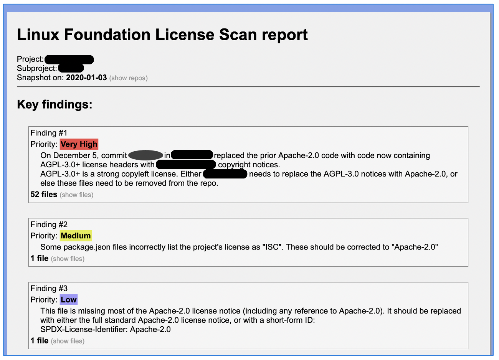
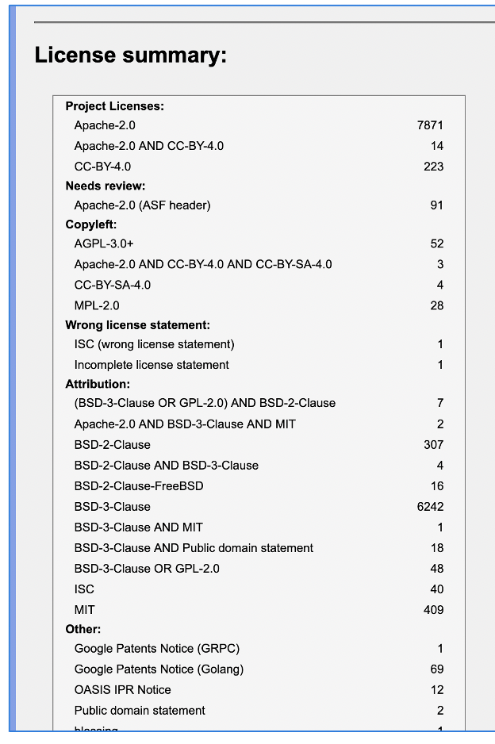
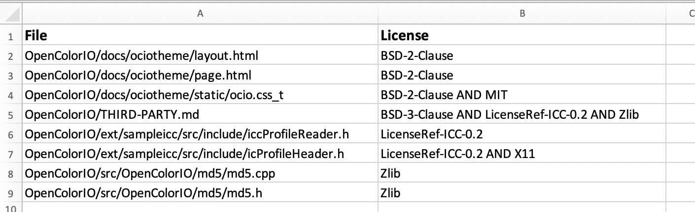

DEPRECATED - current version at https://wiki.lfenergy.org/display/HOME/Contribution+and+Compliance+Guidelines+for+LF+Energy+Foundation+hosted+projects
The Linux Foundation License Scanning and Analysis Support Program for LF projects
Support plan summary for 2021: LF Energy
Support to be provided by: Steve Winslow <swinslow@linuxfoundation.org>
For the projects described below, the following actions will be performed:
-
Run recurring scans, on the schedule described below, of the project’s codebases using Fossology
-
Analyze and clear licenses, notices and copyright statements contained in the project codebases
-
Publish SPDX documents with the license conclusions and copyright statements at https://github.com/lfscanning (or a similar public location), for broader community use in their own compliance processes
-
Produce summary reports for project leads / maintainers, with limited public visibility (or optionally public at the project’s discretion) with the following:
-
catalog and summary of licenses detected, categorized and identifying corresponding files
-
description of key findings, particularly relating to incompatibility with project licenses and project IP policies
-
recommendations for remediation where necessary
-
guidance for best practices to improve project licensing notices and add statements to files without existing notices
-
-
Correspond with developers to address questions about findings, where possible without providing legal advice (see “Notes” section below)
-
Upon request from the project, up to approximately two times per year (such as prior to significant releases), assist with formal IP policy approvals under the project’s charter:
-
document the license scan findings as “license exceptions” for approval by the Governing Board or technical leadership committee, as applicable
-
prepare summary slide deck describing the requested exceptions
-
present to project Legal Committee or similar leadership body to describe the requested exceptions and facilitate approvals under the charter
-
Stretch goals: will perform where feasible, subject to available resources and time:
-
Run “red flag” pre-intake scans, for net new projects:
-
Run Fossology scan of incoming codebase, prior to import into a project-controlled repository
-
Identify any “red flag” or “high priority” issues that would be likely to present a significant problem for license compatibility
-
Correspond with developers regarding these issues where remediation is recommended
-
-
Parallel to Fossology scans, also run dependency scans using WhiteSource:
-
review and clear scanning results, researching potentially concerning findings as appropriate;
-
flag key issues to the project leads / maintainers;
-
work towards providing standardized reports of all dependencies; and
-
work towards providing vulnerability findings as part of results.
-
Note that WhiteSource has recently been incorporated into the license scanning workflow, so some of this functionality will be subject to continued development of the scanning workflow automation.
Notes
-
The Linux Foundation is not able to provide legal advice to project community members. The support program is focused on providing transparency about identified project licenses, and where possible describing general community understandings of license requirements. However, questions about e.g. whether a license is legally okay to use must be directed to the contributor’s own legal counsel and/or a project’s Legal Committee.
-
The support program utilizes various automated tools supplemented by manual reviews. However, like any other scanning tool or process, the LF cannot guarantee the completeness or accuracy of the license scanning results, and does not guarantee that all possible license issues in a scanned codebase will be identified.
Dependencies on other LF and project teams
-
Will periodically need assistance from project manager or similar project staff support, to coordinate on preferred methods for communications with appropriate project community members.
-
May periodically need LF IT assistance for configuring certain types of scans, for those that are dependent of CI/CD processes that are managed by LF IT (none presently anticipated for current projects / scan types)
Covered projects and schedule of scans
NOTE: during the TAC meeting on Dec. 8, 2020, it was stated that not all projects’ source code is currently available. It is possible that the schedule below may be adjusted to accommodate sizing or changes in timing for when the full code base is available.
Cycle 1: January, April, July, October
-
RIAPS
-
CoMPAS
-
OpenLeadr
Cycle 2: February, May, August, November
-
GXF
-
OperatorFabric
-
PowSyBl
Cycle 3: March, June, September, December
-
Seapath
-
EM2
-
OpenEEMeter
Exhibits
-
Screenshots from example SPDX document
-
Screenshots from example scan report for developers
-
Screenshots from example board decks
Exhibit 1
Screenshots from example SPDX document


Exhibit 2
Screenshots from example scan report for developers
Key findings and recommended actions:

Summary of findings:

Spreadsheet with detailed findings:

Exhibit 3
Screenshots from example board decks